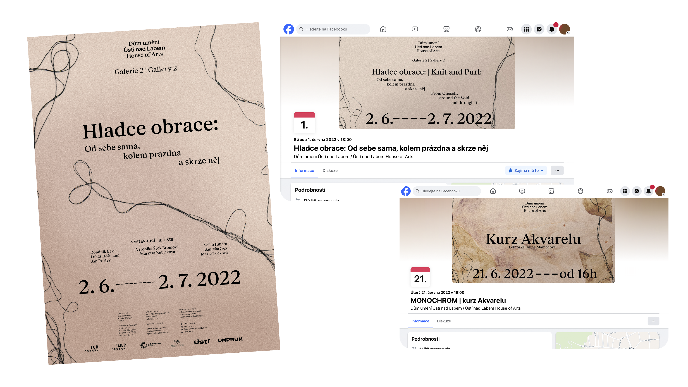
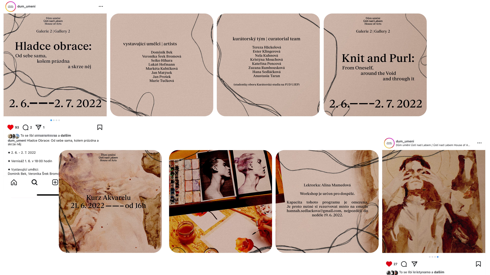
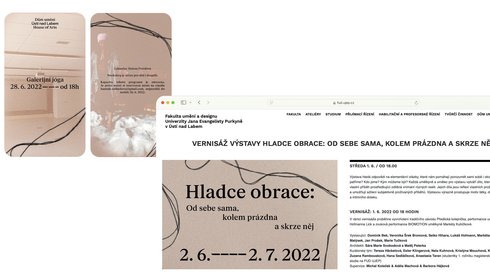
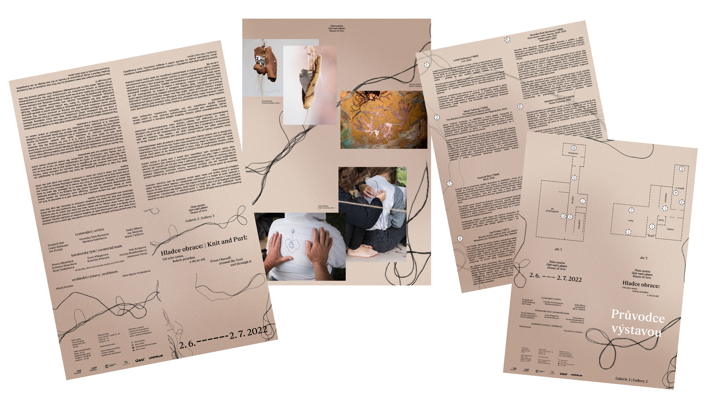

celkový vizuál (cz a en) výstavy v Domě umění Ústí nad Labem; plakáty, social media (facebook bannery, instagram příspěvky, instagram stories), příloha do článků, letáky, mapa výstavy, ekomail, etc




kompletní vizuální identita a webové stránky indie značky SLTWRLD